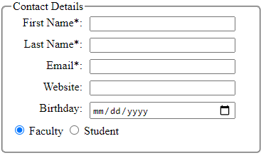
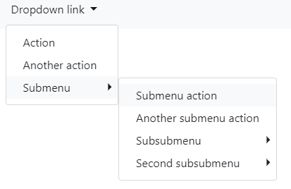
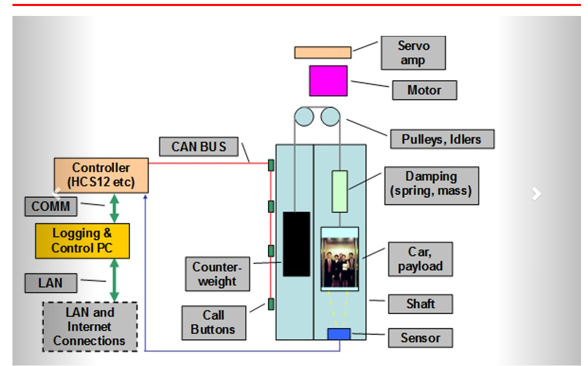
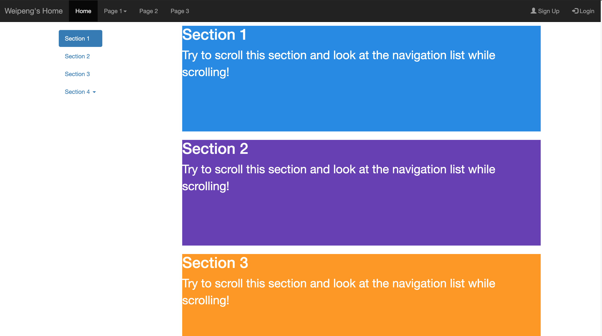
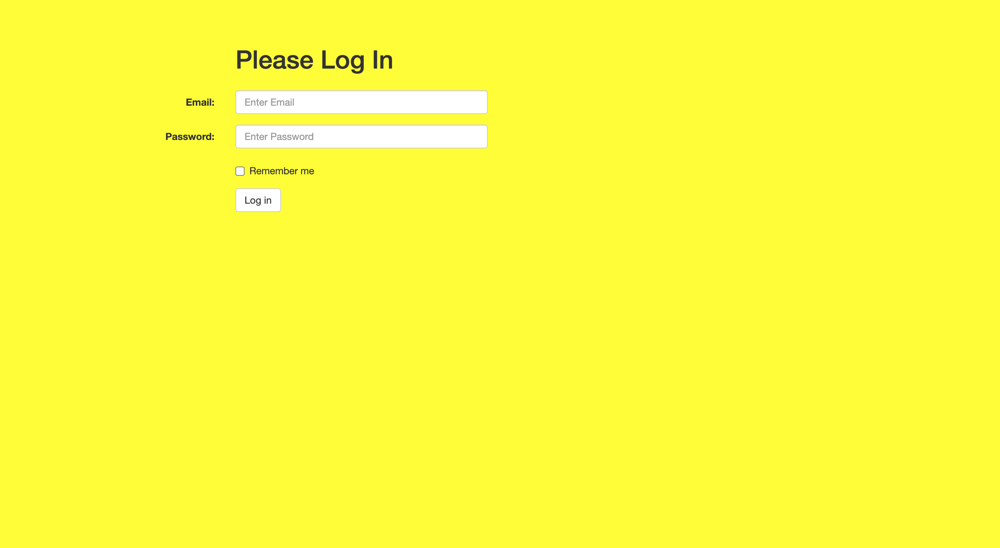

Weipeng's Log Book
Week 1
- May 21, 2020
- Finished project webpage framework
- Finished github set up
- May 22, 2020
- Set up Nucleo board for programming
- Can't set up Atollic, switch to CubeIDE
- Encounter "GDB server" error. Solved by switch power source to ST-link
- May 23, 2020
- continue on Nucleo board programming
- code can be complied and uploaded successfully, when push blue button, difficult to tell if it's triggered because of reciving message
- need to figure out a way to verify message is actually received
- try to work with external button and LEDs
- Buttons are set to active low by default
- Blue Button is PC13
- Pinout Map
Floor Button LED 1 PC13 PA5 2 PC12 PA6 3 PC11 PA7 - set EXIT15_10_IRQHandler() to check which line flag is set, then pass the pin to HAL_GPIO_EXTI_IQRHandler()
- According to the passed-in pin, HAL_GPIO_EXTI_Callback() will set different button flag
- In main function, will send out different floor message according to button flags
- Set up filter
- Assume need to accept ID 0x100 to 0x103
- Set filter.FilterIdHight to 0x0100<<5 (shift 5 digit to 5 because standard ID only has 11 digits)
- Set filter.FilterMaskIdHigh to 0xFF80 (for the 11-digit ID, the left 9 digits have to exact match)
- set sender ID to 0x100 ~ 0x103, the LEDs works properly
- set sender ID to 0x104, the LED does not respond. Filter works properly
Week 2
- May 25, 2020
- Nucleo64 CAN demo wiring diagram

- May 28, 2020
- Update Project Webpage
- Added meta tags
- Added login and request access pages
- Added google map iframe
- May 29, 2020
- Transfer Nishant's finite state machine logic from word to html
- Add basic states diagram and target setting algorithm
Week 3
- June 1, 2020
- Create weekly status report for week 2
- Improve status report page
- Remake resume. The current resume style is not attractive and lack key skill information. Will need to find a good format and fill in skills
- June 2, 2020
- Remake cover letter. The current cover letter lacks the introduction of the school program. Will add a paragraph for it
- Prepare for data com quiz 1
- June 3, 2020
- Prepare for math quiz 2
- Finished math assignment 6. Not sure if using F or f to do the calculate
- June 4, 2020
- Watched Natural Science week 3 lecture 2 part A (part B is not available yet, need to find a time to finish it)
- After discuss the math assignment with Eduard, found my way to do assignment 6 is wrong. For assignment 6b, seems we still lack some knowledge
- Worked on project login and request_access pages. Now the input boxes are aligned 
- Add copyright footers to each page
- Finished software assignment#1 Q14-a. Will continue to work on Q14-b
- June 5, 2020
- finished software assignment#1 Q14-b. Will need someone to review the page
- June 7, 2020
- change Eduard's navigation bar a little and generalized it to all our pages
- Try to build a nested dropdown menu, find a source here: https://stackoverflow.com/questions/44467377/bootstrap-4-multilevel-dropdown-inside-navigation 
- The nested dropdown doesn't work. The secondary dropdown menu position shifted
- May require JavaScript function to do it?
- June 8, 2020
- remake the project home page with slide show with carousel 
- restructure the header with grip. Want the team logo to disappear when window is narrow.
- hasn't found a way to hide the logo. Online sources are more for bootstrap 4: https://mdbootstrap.com/snippets/jquery/ascensus/131016
- Try to change the bootstrap to version 4, need adjustments for the slide show. I can have the slide show works, but the prev and next buttons are invisible. Also the .d-md-none doesn't work well
- Rollback to bootstrap 3 since the slide show buttons' issue
Week 4
- June 11, 2020
- Try to set up LAMP at personal Rpi4
- "sudo apt-get install lamp-server^" didn't work. couldn't find the package. Have to install apache2, php, mySQL, phpMyAdmin individually
- The mysql-client part of the instruction is outdated. Used mariadb-server instead
- Used this resource to finish the rest
- Successfully access the mySQL database and create a new user
- June 12, 2020
- Switch my main workstation to Mac. Set up git, vscode, XAMPP, etc for the project
- Becuase I feel my knowledge regarding HTML, CSS, and JavaScript are not concrete, I decide to take this chance to review web knowledge that is required by the project
- Some project webpage components, such as the navigation bar and bootstrap functionalities are done by others. Need to practise how to make them
- Built a personal practice website from ground up
- Build the same style of nav bar with the help from here
- June 13, 2020
- Continue to practise my web skills on the personal website
- Build a second vertical nav bar, called scrollsp, that can interact with the main content. Get resource from here 
- Built log-in and sign-up pages with bootstrap. Get resource from here 
- Practise putting an image along with inputs
- Try to have image rollover effect on project log in page
- Try to use the pseudo element method (:hover, :active) to make image rollover, but it doesn't work. Guess if the target element is covered by other elements, the mouse event is not triggered
- Use JavaScript to realize the effect. Create a set of 3 images: one for inactive status, one for mouse hover status, and another one for mouse click status
- Create 3 event listener for the button. Then change source image according to coresponding events. The idea was inspired by this.


- encounter issue after Eduard putting navbar and bootstrap codes in one place
- It is quite wired that the same code works in PC, but not at my Mac and Rpi4
- It seems the .php files failed to run properly
- Found the reason: the apache servers in Mac and Rpi4 didn't prioritize index.php over index.html, while the server in PC does so. Just need to specify the page path to index.php, then everything works fine

- June 14, 2020
- Convert my look book to the scrollspy format
- The conversiont didn't go very well. The side navigation list was not highlighted automatically when main content is scrolled.
- Found that if content sections are in different heights, the scrollspy format doesn't work
- Try to convert the daily activity to sub menu items, but still had the same problem
- Cannot have the scrollspy format worked, rollback to original format
- Manually create a side panel and make a ancher list to scroll to weekly contents. Since the top nav bar hides some space, have to wrap the week section into a div and offset each section by 70px
- Beautify the log book with coloured sections and border radius
- June 15, 2020
- After adding .php control on all .html pages, there is repeated issue that a notice of session_start() appears on top of each page.
- The log in page shows error message that the username is missing from php.
- The first issue is caused by using the top_header.php, which includes a session_start() and repeats if top_header.php is called at other .php files
- The second issue happens because the login page starts a session when the page is opened, but the username and password haven't been input yet. Add an authenticate.php to link the login form and remove session_start() from login.php.
- Add authenication from JSON file. Now is ready for getting credentials from database
Week 5
- June 21, 2020
- try to save sign-up user data to the json file
- Since the sign up and log in process will eventually implement with database, so this is only for practise and will only be deployed at my personal website
- Try to use the json_encode() and file_put_content(.. $flags=FILE_APPEND), but it doesn't work. The new data will be appended directly outside the original json structure.
- Try to use array_merge() function (Source), the array is appended into the structure, but not separated as a secondary array.
- Try to use array_push() function (Source), then all the new user data will be appended to the end of the structure as a single element

- set up database at local computer
- Try to follow Michael's first database slide to set up mySQL at my MAC
- Encounter a big issue - after drop user root@localhost and create user root@%, the mysql database disappear. I can still log in as root user without password, but SHOW DATABASES does not show mysql database. And I can't edit other databases as well. Keep getting error "Access Denied from user ''@'localhost'..."
- Try to reset root password in safe mode by following this instruction, but the safe mode server didn't run properly, so couldn't reset password.
- End up reinstalling XAMPP, and the mysql came back.
- Instead of deleting the root user, I created a new user and give it all privileges following the option 1 instruction.
- The new user was still problematic, couldn't use it to login mysql
- Instead of creating user at "%", I used "localhost", then everything works.
- Practise creating some database from terminal
- Managed to create elevatorNetwork and CAN_subNetwork tables


- try to save sign-up user data to the json file
- June 22, 2020
- Learn how to communicate back-end with database
- After trying out the select statement from Michael's slide, I managed to get rows from database:
- Successfully inserted new row to database from back-end:


- Try to implement credentials verification and user sign-up with database
- Created a credentials table including user info such as: email, username, password, birthday, gender, is_student, is_teacher, is_staff, otherInfo
- For the credentials verification, the back-end will prepare a SQL statement according to user-input email, which is the primary key for the credential database. If the email exists at the userCredentials table, then continue to check the corresponding password
- For signing up new users, will form a new user array, then create SQL statement with the new user array
- Will need to find a way to check duplicate user


- Learn how to communicate back-end with database
Week 6
- June 25, 2020
- Continue to work on email duplicate check with AJAX
- The JavaScript codes are basically given by Michael. Need to figure out the php side
- the ajax function at JS will receive the message from "echo" in php. Found a good resource at here
- Not sure why keep receiving responseText that contents more than just the echo message
- var_dump() will also sends data back to JS.
- Now JS can talk to php with ajax. Time to hook php with database
- When try to select a non-existed row in a table, the execution result is true, just return an empty array. So if the database execution result is an empty array, means no duplicate entry
- Successfully have the email checked! When email is duplicated, a red warning will show up, otherwise, a blue message will tell the email is ok.
- Implement all credentials functions in project webpage


- June 26, 2020
- Transfer all credentials functions from test website to project website
- The request access form includes a practise checkbox field which has nonsense options. Changed it to course enrollment options as additional info.
- Add several form validation JS functions ensure submitted data is valid: comparePassword(), checkInputLength(), checkUsernameDuplucate(), validateForm(). validateForm will call all other functions when submit button is clicked. Any validation failure will prevent the form submission.
- Created a new database named "project_database at school rpi". Created a user credential table that matches request access form
- Add duplicate user name check
- Successfully Signed up first user account througth request access page
- Successfully log in with the newly-created user account


- Pull the updated project to school Rpi
- Encountered issue after pull from master. User cannot submit request access form, but the same code worked perfectly at my Mac.
- Found a bug at the duplicate check php function. Fixed and try again. Still not worked
- It seemed the AJAX function did not work properly at Rpi. The AJAX worked fine when cursor out of focus, but it didn't work when subtmit button was clicked. Might be caused by slow database response?
- Added try and catch error to AJAX function, but didn't catch any error
- Whenver disabled the AJAX function, the form could be submitted successufully. Might need to find a workaround to the issue.
- Add a duplicate check flag to the JS file. Once the first check is passed, the flag is set, then at the time of submission, validateForm() will only check the duplicate flag.
- This workaround seemed work fine. so we can consider the user credential system is up and running.
- Transfer all credentials functions from test website to project website
- June 27, 2020
- Eduard can successfully create a user account and login from his side. The user credential system is fine now.
Week 7
- June 29, 2020
- Try to make our web GUI work with the real elevator
- Need to understand how the real elevator is controlled
- From Micheal's demo code, the C++ code keeps reading currentFloor from elevatorNetwork where nodeID=1, so as long as the number of currentFloor in db is changed, the real elevator will act correspondingly.
- The C++ program does not set status of the elevator in the database, which may be a problem if we want the GUI to sync with the real elavator. Will leave this for now.
- To talk to the database without refreshing the page, will need to use ajax function. This will be similar to the username duplication check function.
- Created a set of functions in elevator.js: setFloorDB(floor) and getFloorDB(). Whenever these functions are called, they will make http request to backend.
- Created a elevator_control.php to handle the http request from above functions. If request command is null, it means get current floor from database, otherwise it will set the current floor to the request value.
- getFloorDB() should have reture a value, but it only returns "undefined", which is similar to the issue I encountered for the username duplication check. Need further debugging.
- The backend works properly. It can get value from database properly and echo the value.
- Search the issue online, and found that actually ajax functions are async functions, which will have a time gap between make request and get response. The best way to deal with it is to use callback function, which I am not so sure how it works.
- Found some useful resources at here and here
- Basically, I need to pass in a function to the getFloorDB(). Whenever the response is received, the passed-in function will be called. The passed-in function will get the result from ajax function and continue to operate with that result.
- In order to ensure the GUI elevator is sync with database, getFloorDB() will be called whenever the page is loaded. Then change the GUI according to result.
- Since the default position of GUI elevator is at 3rd floor, the GUI may flash a change at the beginning. I think it's acceptable.
- Considering there is nothing constantly checking the actual floor number in db and no elevator controlling logic, will slow down the GUI elevator animation to aviod floor change before sending another command
- I can see the real elevator is moving when I push button in the GUI. The database value also changes accordingly.
- Things to do: 1. the elevator GUI works separatedly from the real elevator, need some sorts of sync mechanism; 2. There is no any error handling and protection mechanism to the control system; 3. Need a way to integreate the elevator control logic.

- Try to make our web GUI work with the real elevator
- July 4, 2020
- Have a meeting with Nishant and Ramtin. Eduard can't attend because of work.
- Ramtin finished the stat page html and css coding, will continue to work on js. Nishant will start to work on diagnostic system, which will need him to create a new git repo for C++ program.
- Eduard wrote some functions for elevator control logic. We will work on integrating the elevator control logic with our program.
- Talked 2hr with Edurad at night. Realized several issues and generated an initial solution:
- We decided to put the logic control at the backend, in order to take advantage of the array manupilation ability of php. However, this will cause an issue that the backend will not be informed when the database is updated by the C++ code, so we need something to constantly check the database.
- Currently, the C++ code only use the current floor value to operate. It does not update elevator status(moving or stop). Also, the C++ code will update the db even before the real elevator actually finishes the command.
- After discussion, we decided that Eduard will focus on the logic control integration. When a button is pressed, a button id will be passed to logic control backend. The backend will process the data, save the control array to json file, and update db values according to its processing result. Meanwhile, there should be a watchdog function constantly checking the database. Once the last command is executed successfully, the watchdog function will send the next target to db, until there is no next target in the control array.
- I will work on the C++ code and my tasks are to understand what CAN messages are transmitted and received when elevator moves and to figure out a way to update elevator status to reflect the actual situation.
Week 8
- July 11, 2020
- Create tables in database to be able to indicate elevator status and log elevator stats.
- From Michael's hint given in last debriefing, the elevator control should keep broadcasting the current floor of the elevator.
- Using the demo code->option2, we can tell the current floor at the data(Last byte of the data, floor 1 is 5, floor 2 is 6, and floor 3 is 7)
- This floor number will not change until the elevator actually reaches the floor, so we can use it to indicate the status of the elevator.
- The following tables have been created in the database for elevator control and statstics:
- elevatorControl - main table to indicate requested floor, current floor and status
- elevatorNetwork - a table connects nodeID to its label
- floorStats - record number of hits, last stay time, total stay time for each floor
- floorHistory - add a new log everytime a floor is reached


- Table elevatorControl, floorStats, and floorHistory all refer to nodeID in elevatorNetwork as foreign key.
- In order to add timestamp to a new row, use SQL default current_timestamp. Reference is here
- floorStats and elevatorControl have a column updated_at, which will be updated automatically when the row is changed. Use SQL default timestamp on update current_timestamp
- To find the time stay in a floor, need a way to calculate the time different between 2 timestamps. Found a resource for DATEDIFF() in here
- It seems the MariaDB doesn't use the DATEDIFF() in a way as the resource above. It only requires 2 timestamps and always output difference in days, but I want output in second. Found the MariaDB official reference at here. Can use TIMESTAMPDIFF() to output time difference in second.
- Next things I need are first and second record in the floorHistory. Have to use cascade SQL statements(select from select). Here are the SQL statements to update floorStats:
- UPDATE floorStats SET lastStaySec = (select timestampdiff(second, (select arrivalTime from (select arrivalTime from floorHistory order by arrivalTime desc limit 2) as tt order by arrivalTime asc limit 1), (select arrivalTime from floorHistory order by arrivalTime desc limit 1)) as timeDiff from floorHistory limit 1), totalStaySec = (totalStaySec+ lastStaySec) WHERE nodeID = 2;
- UPDATE floorStats SET hits = (select count(*) from floorHistory where nodeID=1) WHERE nodeID = 1;
- Add C++ functions to update the database.
- General design flow chart:
- Added CAN_getCrtFloor() to get the real elevator status from the CAN broadcasting message.
- Added db_setStatusBusy(), db_setStatusFree(), and db_logFloorChange() to update db tables whenever the elevator moves.
- Keep getting "Segmentation fault" error. Fixed by getting rid of deleting wrong pointers.
- The Segmentation error may still happened sometimes. Not sure why. If I commented out the deleting points lines, I don't get the segmentation fault error, but will get too many connections error from database.
- It's generally working fine now. The floorStats and floorHistory tables can be updated along with the floor changes.

Week 9
- July 18, 2020
- Working on the c++ to be able to report current floor to database and respond to the sudden change of request floor
- During the elevator moving toward its next target, add constantly checking and set current floor to the database
- Test: change request floor to 3, then change to floor 2 immdiately
- Failed - elevator moved directly to floor 3
- Failed - same
- Failed - same
- Success - the elevator stopped at floor 2, but it's in a very rush way, feeling like stopped unexpectely
- Failed - same
- The result is not very good. It seems like the elevator is moving too fast to actually respond to the change of request.
- Also the floor history log is not correct. Some logs show elevator moved from a floor to a same floor:
- It will be difficult to demo the ability of adapting to sudden change of request with the current elevator control loop. Considering re-make the elevator control loop.
- New elevator control loop:
- After implement this new control loop, the elevator is able to respond to sudden changed request


- July 20, 2020
- Fixed the elevator slow responding issue by adding back the CAN_close() to the end of CAN_getCrtFloor()
- Fixed the fragmentation fault error by removing the unused res pointers in database functions.
- Now the c++ program can run as long as user needs.
Week 10
- July 26, 2020
- Work on making elevator annouce floor number in school rpi when reaches a floor
- Prevously, has successfully used "omxplayer -o alsa filepath" to play audio. Since the school rpi video streaming is down again, assume this command works and will put it in the test c program.
- In audio.c, use fork() to off load the audio play command so that the main program can continue without waiting for audio finishes playing.
- The multi-process c program is working properly. Will integrate to the elevator control program
- Add a request floor and current target check in the main control loop. Once the current target is reached and it matches the request floor, the elevator floor number is announced.
- Ceate Sabbath mode with the demo loop
- The Sabbath mode will have the elevator repeatedly moved between floor 1 and floor 3. Whenever it reaches a floor, it annouces the floor number, wait for 10 seconds, then moves to the next floor.
- Simplify the move target control with an array = {1, 2, 3, 2}, then create a loop with index looping and incrementing
- Used existing functions from the gui control loop, the Sabbath mode now works properly. The history and stats will also be updated in this mode.

- Work on making elevator annouce floor number in school rpi when reaches a floor
- July 27, 2020
- Remade diagnostic page with ajax functions. Now it can show all database tables dynamically and updates every second.
- Help resources:
- July 28, 2020
- Improve table execution GUI so that only the valid column input will show up when table selection is changed.
- If table selection is null, then execution dropdown will be hidden, and execution panel will be cleared out.
- Disable go button default behaviour to avoid page refreshing. The data will be updated through Ajax functions

Week 11
- July 28, 2020
- Add Exception handler in editSingleCellValue(). Now using transaction to deal with database communication. If execution result is failed or the affected row is not 1, will rollback the transaction and return the error message
- Removed most echo lines from elevator_logic.php so that the only important messages will be showed in the frontend.
- July 30, 2020
- Fixed several bugs regarding updating values via the diagnostic page:
- A function did not use the rowSelectKey() functions, which results in the wrong row key is used.
- When updating a cell value with letters, will need to append quotation marks around it.
- Passed back real error message from "$statement->errorInfo()".
- Add the authorized column to the request_access2.php.
- Fixed several bugs regarding updating values via the diagnostic page:
Week 12
- August 9, 2020
- Make demo PowerPoint slides for final demo
- Help Ramtin debug the stats page. The problem is that the bar chart sometimes cannot show all the values properly, but it will correct itselft after switching to other page and switch back. The chart creation uses chart.min.js, which is an external script and takes in an object Chart. I debugged the Chart object and the values that passed in are correct. My guess is that it is either a bug inside the external script, or the getValue from localStorage takes time, so the passed-in values are null.
Copyright © 2020 Eduard Nishant Ramtin Weipeng